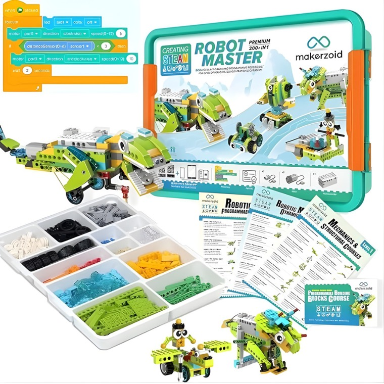

Notes
Things Liam (7) built these holidays
Edited today
a robot dog
a crane that actually lifts things
a dinosaur (it walks, apparently)
a car he coded himself
about 196 more to go

Robot Master Premium, 200+ builds